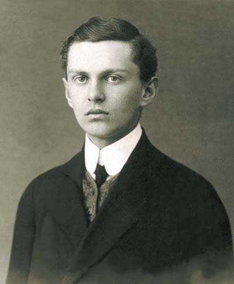

“You are the light of the world. A town built on a hill cannot be hidden. 15 Neither do people light a lamp and put it under a bowl. Instead they put it on its stand, and it gives light to everyone in the house. 16 In the same way, let your light shine before others, that they may see your good deeds and glorify your Father in heaven.”
Apostle of the Youth
Prayer Movement
Welcome to the Official Website of the Apostle of the Youth Prayer Movement (AYPM) — a spiritual initiative of the Blessed Ivan Merz Family, under the heavenly patronage of the Sacred Heart of Jesus and the Immaculate Heart of Mary.
Embracing daily self-offering in union with Christ's Cross to build apostles for Church & world.
Drawing entire strength for holiness & apostolic work from daily Holy Communion and Adoration.
Letting prayer overflow into mission—witnessing Christ in schools, workplaces, and defending the faith with courage.
About the Movement
Not a new invention, but a historical revival of the apostolic flame begun in 1923 by Blessed Ivan Merz, uniting young souls in Eucharistic holiness.
Croatian Catholic Eagles Revival
The AYPM traces its spiritual lineage to the Croatian Catholic Eagles of 1923 (Hrvatski Orlovski Savez), championed by Blessed Ivan Merz—a lay apostle whom Pope John Paul II beatified and whom Cardinal Franjo Kuharić rightly called "a masterpiece of the Holy Spirit."
We unite young people worldwide into a spiritual family centered on prayer, the Holy Eucharist, and the sanctification of everyday life in the world, under the heavenly patronage of the Sacred Heart of Jesus and the Immaculate Heart of Mary.
The Core Motto: Sacrifice • Eucharist • Apostolate
Sacrifice
Embracing daily self-offering in union with Christ's Cross to build apostles for the Church and the world. Through penance, mortification, and the offering of illness and trials, members sanctify their daily duties.
Eucharist
Drawing our entire strength for holiness and apostolic work from daily Holy Communion and Eucharistic Adoration. The Eucharist is the vital heart of the youth movement and the source of interior purity.
Apostolate
Letting prayer overflow into mission—witnessing Christ in schools, workplaces, and society, defending the Catholic faith and papal teachings with unyielding courage and intellectual rigor.
Catholics Who Strive for Sanctity
"The Apostle of the Youth Prayer Movement (AYPM) envisions itself as a global family of Catholic faithful, especially young people, who seek to live holiness in the ordinary circumstances of daily life. Following the model of Blessed Ivan Merz, members are inspired to echo his conviction that the ultimate vocation of every Christian is no less than sanctity."
First, Catholics Who Put Order to Prayer
AYPM members are those who recognize prayer as the foundation of Christian life and strive to give it structure and priority. They faithfully recite the Prayer for the Canonization of Blessed Ivan Merz, regularly participate in the sacramental life of the Church, especially the Eucharist.
Second, Catholics Who Take Prayer Seriously
Prayer is not a formality but an encounter with God that shapes the heart. Inspired by Blessed Ivan’s words: “Never forget God! Always desire to be united with Him”, AYPM members are those who dedicate themselves to a deeper spiritual life through study of Ivan’s writings and the teachings of the Church, using sacramentals such as the Chaplet of Blessed Ivan Merz as reminders of prayerful discipline, and pursuing ongoing formation.
Third, Catholics Who Witness to Christ Through Prayer
Prayer naturally manifests in mission. For AYPM members, prayer becomes a witness when it inspires a credible testimony of life. Members share prayer cards, relics, and devotional materials as tools of evangelization, engage in works of sanctification and charity together with the Blessed Ivan Merz Family, and are living witnesses of Christ in schools, parishes, and workplaces.
Blessed Ivan Merz (1896–1928)
"A masterpiece of the Holy Spirit" — Soldier, literary scholar, professor, and lay apostle who offered his life for the sanctification of youth.

A Lay Masterpiece for the Universal Church
Born in Banja Luka, Bosnia, Ivan lived as an artillery officer during World War I, a brilliant Paris-educated academic, literary scholar, and professor. He anchored his entire existence on the divine liturgy, daily communion, and absolute fidelity to the Holy Father in Rome.
At age 27, he made a private vow of perpetual chastity and systematically offered his physical sufferings and early death at age 32 for the youth of Croatia and the Catholic Church.
The Chaplet of Blessed Ivan Merz
Composed of preliminary prayers (Our Father, Hail Mary, and The Apostle's Creed) followed by 32 Glory Be’s in thanksgiving for the 32 years of his earthly life, linking our prayer life to his intercession.
The AYPM Cross & Emblem
Symbols of fearless witness, reminding members that they must stand like rocks in defense of the Catholic faith and papal authority in the public square.
Prayer Cards
Sacred prayer cards of Blessed Ivan Merz and the historic Christus Vincit acclamation.
Prayer to Blessed Ivan Merz
"Loving and Merciful God, you chose your servant Blessed Ivan Merz to be one of our intercessors in heaven. His life of total dedication to you through chastity, service to the Church, education and formation of the youth, promotion of liturgical renewal and love and fidelity to the Pope are truly inspiring. May he imbue and help me to be a saint. Through Blessed Ivan’s intercession grant me the favor I request (here make your petition), and in your mercy deign to grant us his canonization. We ask this through our Lord Jesus Christ, your Son, who lives and reigns with you and the Holy Spirit, one God, for ever and ever. Amen."
Christus Vincit! Christus Regnat!
"Christus vincit! Christus regnat! Christus imperat! Exaudi, Christe: Domino Nostro Papae, vita! Christ conquers! Christ reigns! Christ commands! Lord Jesus, Sovereign King of all hearts and nations, keep our youth faithful to the Holy Catholic Church and obedient to the Vicar of Christ until death. Amen."
Light a spiritual votive candle before Blessed Ivan Merz in thanksgiving, for your personal intentions, or to unite your heart with our global prayer for the sanctification and deliverance of Catholic youth.
The Chaplet of Blessed Ivan Merz
Recite the preliminaries (Our Father, Hail Mary, The Apostle’s Creed), followed by 32 Glory Be’s with invocations, and conclude with the official Prayer for Canonization.
Membership
Open to all Catholic faithful, especially youth, seeking structure, purity of life, and apostolic witness under the mantle of Blessed Ivan Merz.
Aspiring Members
Open to any Catholic at least 12 years of age who undergoes a minimum of one month of formation, studying the Handbook and Golden Book.
- One-month foundational formation
- Daily prayerful discipline
Regular Members
Those who have completed formation, taken the Solemn Oath, and carry the official ministry cross and emblem.
- Invested with the AYPM Emblem
- Carries the Official Ministry Cross
- Committed to daily sacramental prayer
Chapter Members
Local campus communities or general communities organized under a patron saint, meeting monthly for prayer, formation, and reports.
- Campus & student fellowships
- General community prayer cells
Ready to Walk the Path of Sanctity?
Learn more about formation requirements, obtaining official Golden Books, or establishing a campus or general community chapter.
Apostle of the Youth Prayer Movement · Blessed Ivan Merz Family